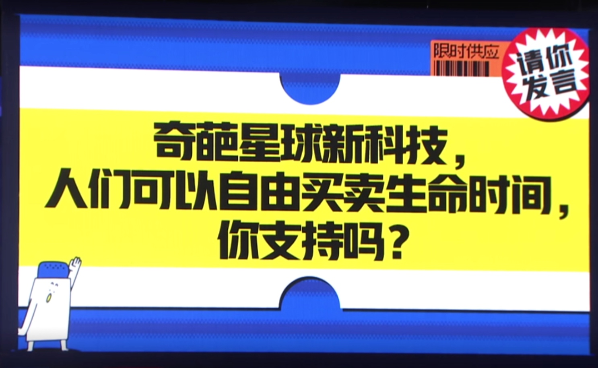

关于奇葩说第七季第14期的辩题：
“奇葩星球新科技，人们可以自由买卖生命时间，你支持吗？”
本文是，我看完之后正反方辩论之后，对于这个科技如何实现的一种想象。
实现形式
我觉得，买卖生命这个交易，如果要服务好交易双方，至少需要满足以下几个条件：
- 买卖双方寿命可预测，否则没人敢冒险卖
- 买方接收到寿命时，如果濒临死亡，也要能起死回生，不然买了也没用
- 寿命叠加后，人体状态要能恢复，如果人衰老到无法动弹，要能够返老还童
- 7日内可撤回交易，也就是假如买方作为受益方已经受益，但卖方提出交易撤回，需要能使买方回到过去的状态，比如返老还童或者起死回生了都要回到交易前状态，意味着人要能回到过去
- 交易完成之后，卖方自愿承担后果，买方可自由再交易
思考完以上几个条件后，我在思考，近一两百年或许人类可能永远无法攻克，如何使一个人回到过去，也无法预测一个人的寿命，也可能无法攻克如何使一个人返老还童，也可能无法攻克使一个濒危死亡的人起死回生，我们短期内根本无法尝到这个科技的甜头。但是，未来的近一两百年，量子数据库出现是有可能的，每一个人类的记忆以及知识图谱，实现数字化的上传和下载都也是可能的，从而可以实现人类大脑的重置，可以实现“借体还魂”，实现另一种形式的重生和生命时间的交易。
因此，买卖生命这个交易，或许可以转换成，出售身体自主权为交易内容。也就是如题所说的”卖身“，这样可以无需要求寿命可预期，卖方只要出售身体自主权，即便中途死亡，也是买方承担风险。具体的交易形式如下：
- 买方生前，从自己的遗产管理协议中签订，订阅哪一个意识体托管服务商，多少次”借体还魂“的服务，买方要提出自己的活动要求供卖方考量
- 服务商会在买方死亡24小时内，数字化的上传买方的所有记忆以及知识图谱
- 卖方根据每一个服务商的每小时的采购价格，出售自己至少7日之后的哪一个时间段内的身体自主权，签订协议，服务商会告知卖方需要承担买方掌握其身体自主权后可能产生的生命风险
- 卖方提前收到交易款，7日内可退款，撤销交易
- 买方可以指定卖方的性别，年龄，身体状况作为交易要求，从而实现返老还童的要求
- 卖方可以要求买方的性别，活动的形式/范围。
- 假如卖方在交易过程中身体遭受意外，买方需要承担意外死亡/伤害的风险，而且需要承担所有医疗费用，以及保险费用。
- 交换身体自主权的当天，卖方大脑的记忆和知识图谱会全部上传暂存服务器，同时买方的知识图谱和部分记忆片段会下载到卖方大脑，服务商需要随时监视买方活动，避免所有伤害卖方身体的可能，并具备随时暂停交易，保证卖方的权利
- 法律应当规定伦理道德底线，交易双方必须是出生时间至少相差50年的人，而且素未谋面。交易过程中，买方只能够获取部分与身份无关的记忆片段，但拥有生前的知识，如果交易过程中买方回忆起自身身份，交易停止。
那么如果交易真的要成立，服务商是中间不可或缺的环境，并且服务商所依赖的”量子数据库“，更是其核心技术，而这个核心技术如何实现呢？
脑洞核心技术
（下面就是一派胡言）
纵观现今，2021年，所有数据存储都依赖存储介质，未来肯定也是，存储介质实现加量不加价，甚至白菜价都是未来的趋势。真正的问题在于，现有的数据库系统都需要人的设计数据形式，不管是图/表/还是图谱，都需要人为先设计存储形式再存储数据，才能以我们需要的形式进行读取。而这些人为设计的元数据信息，都是有限集合。如何设计一个无限的元数据集合，做到自动直接地进行数据存储，并实现按需读取，才是未来的关键。
我们知道，任何生命在当下的三维世界里的所有行动都会产生不确定性，而不确定性本身没办法记录，但不确定性本身又何尝不能作为存储信息的单元呢？从古至今，每一个不确定性只要都能被打上了标签，那么这个标签形成的链，将能够存储极大的信息量，而这个链，便能成为一种“量子数据库”。不确定性永远都能被自动地产生，所以这个数据库存储量是无穷无尽的。数据库的形成里，我们不记录不确定性，我们只捕获这个不确定性，并关联确定性事件。举个最简单的例子，薛定谔的猫在盒子里，我们只把猫的生死，这个叠加态关联上一个确定性的标签A。数据库的写入时，当我们往标签A写入一条数据时，这条数据会绑定到叠加态坍缩后的可观测态，于此同时我们记录可观测态和数据的关联，实现直接地数据存储。数据读取时，我们从存储介质检索标签A，以及观测态来获取数据。根据这个简单原理，理论上标签的无穷尽的，而每个标签能否再次写入数据是能够被判定的，因为观测态如果重复了就拒绝，如果不重复就可以写入，而且每个数据都可以被检索，从而可以实现这个量子数据库。不仅如此，这个理论上无穷尽的数据库，是足以存下现在所有存活人类的记忆以及知识图谱的，但一切都建立在付费的基础上，毕竟存储介质都是有价值的物理实体。